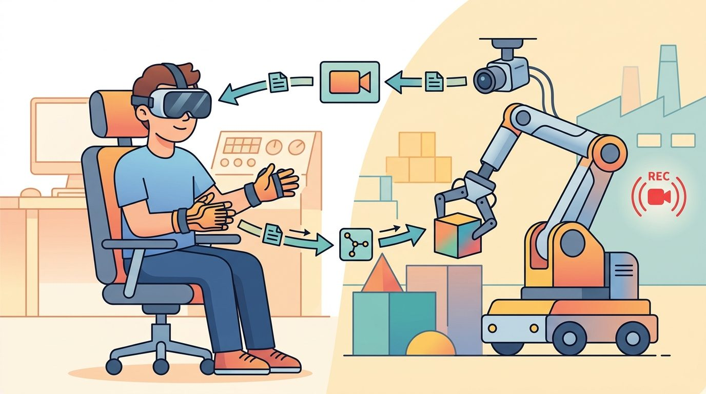
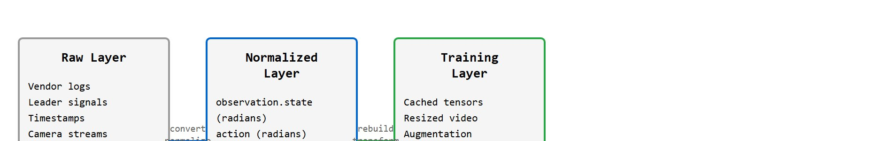

"The folder looked organized until the policy asked which camera was the wrist camera."
A Dataset Loader

This section assumes familiarity with the data quality and labeling concerns introduced in section 23.5, and with the action-chunking representation discussed in section 22.3. The format contract established here feeds directly into Chapter 24, which compares major robot datasets and examines the scaling laws that motivate pooling standardized data across embodiments. The three-layer pipeline (raw, normalized, training) also recurs in Part VI when learned representations are fine-tuned across datasets with different action spaces.
Two labs collect 500 cup-grasping episodes each, but when they pool data and retrain, accuracy drops. The culprit: one team stored joint angles in degrees, the other in radians, and no field name flagged the difference. As robot learning scales toward cross-embodiment foundation models, silent format mismatches become the biggest silent tax on progress. LeRobotDataset exists to eliminate that tax by making metadata, video, sensorimotor signals, and episode boundaries share one explicit contract. Here you will read that contract field by field, convert a raw recording into it, and see how a validated schema catches unit errors before they corrupt a training run.
Before a single gradient step runs, a robot dataset must survive one brutal interrogation. What is the observation? What is the action? Which episode does this frame belong to, and what metadata defines the body and the task? Get any one answer wrong and the policy learns confidently from a lie. Figure 23.6A sketches this shared contract: metadata, video, sensorimotor signals, and episode boundaries all agreeing on one explicit set of names and units. LeRobotDataset v3 organizes these answers around standardized feature names, Parquet tables (a columnar binary file format that stores each field contiguously on disk, so a loader can read just the action column without scanning every camera reference), videos or images, and metadata files. Getting those names right depends on the same concerns about data quality, diversity, and labeling that apply to the collection stage.
If two labs load the same dataset differently, they are not running the same experiment. Standardized formats reduce the chance that preprocessing becomes an invisible baseline difference.
| Field Family | Typical Contents | Why It Matters |
|---|---|---|
| Observation | Images, robot state, proprioception, tactile signals | Defines what the policy can know. |
| Action | Joint targets, end-effector deltas, gripper commands | Defines what the policy is trained to output. |
| Episode index | episode id, frame index, timestamp | Keeps temporal structure intact. |
| Metadata | fps, robot type, features, splits, license | Makes loading and comparison reproducible. |
Code Fragment 1 validates a tiny feature schema before conversion. This catches the most common mistake: an action or timestamp field that exists in prose but not in the actual files.
# Validate a LeRobotDataset-style feature schema before conversion
# Demonstrates the minimum required fields and unit-annotation checks
import numpy as np
# Minimal required fields for a LeRobotDataset-compatible episode table
REQUIRED_FIELDS = {
"timestamp", # float, seconds since episode start
"episode_index", # int, episode identifier
"frame_index", # int, frame position within episode
"observation.state", # float array, joint angles in radians
"action", # float array, joint targets in radians
"observation.images.front", # str or bytes, camera frame reference
}
# Simulated feature schema from a conversion script (what the converter claims)
candidate_schema = {
"timestamp": {"dtype": "float32", "unit": "seconds"},
"episode_index": {"dtype": "int64", "unit": None},
"frame_index": {"dtype": "int64", "unit": None},
"observation.state": {"dtype": "float32", "unit": "radians", "shape": (14,)},
"action": {"dtype": "float32", "unit": "radians", "shape": (14,)},
"observation.images.front": {"dtype": "video", "unit": None},
}
missing = REQUIRED_FIELDS - set(candidate_schema.keys())
schema_ok = len(missing) == 0
print(f"schema ok: {schema_ok}")
print(f"missing fields: {sorted(missing)}")
# Verify action unit is declared (not left ambiguous)
action_meta = candidate_schema.get("action", {})
unit = action_meta.get("unit")
unit_declared = unit is not None and unit != ""
print(f"action unit declared: {unit_declared} ({unit})")
# Simulate a shape smoke-test on a random synthetic episode
rng = np.random.default_rng(0)
n_frames = 10
synthetic_state = rng.uniform(-1.0, 1.0, (n_frames, 14)).astype(np.float32)
synthetic_action = rng.uniform(-1.0, 1.0, (n_frames, 14)).astype(np.float32)
mean_abs_action = float(np.mean(np.abs(synthetic_action)))
all_zero_action = mean_abs_action < 1e-6
print(f"mean |action|: {mean_abs_action:.4f} (near-zero signals missing follower data: {all_zero_action})")schema ok: True missing fields: [] action unit declared: True (radians) mean |action|: 0.5032 (near-zero signals missing follower data: False)
The expected output is intentionally boring: schema ok: True and an empty missing-field list. That boring result is valuable because it means every later training script can assume episode identity, temporal order, timestamp alignment, observation image, robot state, and action are present. If observation.state or timestamp is missing, do not patch the trainer; repair the conversion pipeline so every downstream policy receives the same scientific object.
After the schema is clear, use LeRobot's dataset tooling to create, push, visualize, and train from the dataset. The maintained stack handles storage layout, Hub metadata, video indexing, and PyTorch access that would otherwise become fragile custom glue.
Code Fragment 23.6.1 above validates a schema; it does not perform a conversion. The LeRobotDataset.create() API (from the lerobot package) is the actual conversion entry point: it takes the validated schema plus per-frame arrays for state, action, and images, and writes the Parquet and video files that satisfy the contract. The Pipeline Recipe below walks through that conversion step by step; the Lab exercise later in this section gives a runnable version of the full create-then-verify cycle.
With the schema contract pinned down, the remaining work is the disciplined sequence that turns a live recording into a dataset that honors it, step by step from the robot's clock to the published license.
The five steps below produce three distinct layers of data (raw, normalized, training); that three-layer separation is only named here in passing and is defined in full, with a diagram, in the "Conversion And Verification" section just after this recipe.
info.json at the root with fps, robot type, and feature shapes. Embedding video frames directly in Parquet typically inflates file size by roughly 30x (the exact factor depends on video codec and resolution) and breaks random-access replay on episode sets above roughly 50 GB.A 10 ms timestamp jitter and a 40 GPU-hour discovery cost sound abstract until you have felt them; both numbers are worked through concretely in the Step-Through and Practical Example below, so if the reasoning in this recipe feels rushed, that walkthrough is the place to see it applied frame by frame.
Before reading on, consider: if a second lab downloads your dataset six months from now and the only documentation is a README you wrote the night before submission, which field will silently corrupt their training run first?
A robust conversion pipeline keeps three layers separate. The raw layer preserves the original robot logs, including vendor-specific messages and leader-device signals. The normalized layer exposes canonical features such as observation.images.front, observation.state, and action. The training layer may add cached tensors, resized videos, or model-specific transforms, but those derived artifacts should be reproducible from the normalized layer. This separation is what enables reuse without re-collection: a second lab can rebuild only the training layer from your normalized layer, adapting to a new resolution or action representation without touching the raw logs. A dataset without a declared schema is not a scientific artifact; it is a time bomb left for the next researcher to defuse. Figure 23.6B shows how the three layers connect.

That layered contract only pays off if the normalized layer is also cheap to read at training time, and the reason it is comes down to how the rows are physically stored. Training loops read robot datasets column-by-column, not row-by-row. A loop fetches all action values to compute statistics, or all episode_index values to build a split manifest, without touching camera references. Parquet stores each column contiguously on disk and compresses it independently, so those column scans skip unrelated data entirely. On a cold SSD, a 100,000-row episode table with 14-dimensional state and action fields typically loads in under a second as Parquet, versus several seconds for the equivalent CSV (the exact gap depends on disk speed and compression settings). Float columns typically compress 3-to-5x in Parquet, and the read head never seeks across interleaved row data. That gap compounds at dataset scale: a project that would fit in roughly 8 GB as Parquet can balloon to roughly 30 GB as CSV, often the difference between a dataset that fits on a single NVMe drive and one that requires a remote storage mount, adding a network round-trip to every training step.
In embodied AI this is not just a storage optimization. A policy that reads the wrong column because field order shifted between a CSV export and re-import will execute physically wrong joint targets on the robot. Parquet's schema is stored in the file footer and is checked on every open, so a unit mismatch or missing field raises an error at load time rather than producing a silently wrong trajectory on hardware.
So far: Parquet's columnar layout lets training loops scan single fields cheaply, that layout also shrinks the dataset on disk relative to CSV, and its footer-stored schema turns unit or field mismatches into a load-time error instead of a silent bad trajectory; the remaining question is how to verify the data itself, not just its schema, which is what random-access replay checks next.
The most important verification step is random-access replay. Sample an episode from the beginning, middle, and end; render the camera frame; print the aligned robot state; and overlay the action that follows. This catches off-by-one frame shifts, stale calibration, swapped wrist cameras, and action-unit mistakes that a shape-only validator misses. The payoff at reuse time depends on keeping the layers apart: a second lab retraining at a different image resolution or a different action representation rebuilds only the training layer from your normalized layer, untouched raw logs and all. Collapse normalization and training transforms into one script and that reuse vanishes; the second lab has to re-collect.
Think of the three layers like a kitchen: the raw layer is the unprocessed ingredient delivered by the supplier, the normalized layer is the prepped mise en place (vegetables washed, measured, and labeled in standard units), and the training layer is the finished dish plated for tonight's service. A good kitchen never throws away the mise en place when the dinner rush ends, because tomorrow's chef may want to cook something different from the same prepped vegetables. Collapsing normalization into the cooking step is like plating directly from the delivery crate: it works once, but the next cook cannot reuse anything without starting over from raw.
A common assumption is that the three-layer pipeline (raw, normalized, training) is optional bookkeeping and that merging normalization with training transforms into one script is harmless as long as the final tensors are correct. In embodied AI this assumption breaks cross-lab reuse: when a second team wants to retrain on your data at a different image resolution or with a different action representation, they need to rebuild only the training layer from your normalized layer without re-running your vendor-specific raw conversion. If normalization and training transforms are collapsed into a single script, that layer boundary disappears and the only alternative is to re-collect the data. The correct mental model treats the normalized layer as the permanent scientific artifact and the training layer as a reproducible, disposable derivative: keep raw and normalized layers immutable, and regenerate the training layer on demand from the normalized layer alone.
When naming camera streams, use lerobot-visualize-dataset (the LeRobot CLI command) to render a side-by-side replay before finalizing camera feature names. The tool overlays the feature key on each frame, so a swapped observation.images.wrist and observation.images.front is immediately visible as a policy-perspective error rather than a shape or dtype mismatch that only surfaces at training time. Run it on episode 0 and at least one episode from the middle of the dataset; a mislabeled stream that happens to look plausible in episode 0 will expose itself when the wrist perspective changes across tasks.
A swapped wrist camera is the dataset equivalent of labeling your left shoe "right": the shape is correct, the metadata says nothing is wrong, and every downstream shoe-putting-on policy learns something subtly backwards.
A dataset can pass shape checks while failing semantics. Joint radians, joint degrees, end-effector meters, normalized gripper width, and binary gripper state must not share a vague field called action.
A lab converting GELLO (a low-cost, kinematically matched leader arm used to teleoperate a follower robot by direct joint mirroring) demonstrations should store both the raw leader joint stream and the follower action target. The raw stream helps debug interface failures; the follower target is usually the training label.
Trace the five-step smoke test on a tiny 3-episode dataset, 4 frames each, with a 2-joint arm. The action field should hold the follower joint targets in radians.
Step 1, open: the loader returns 12 rows with columns timestamp, episode_index, frame_index, observation.state, action.
Step 2, sample: pick frames from episodes 0, 1, and 2. Episode 1, frame 2 gives timestamp = 0.040, action = [0.512, -0.233].
Step 3, check timestamps: episode 1 timestamps are [0.000, 0.020, 0.040, 0.060], strictly increasing with a constant 0.020 s step (50 Hz). Monotonic check passes.
Step 4, render and summarize: per-episode mean absolute action is episode 0 = 0.48, episode 1 = 0.37, episode 2 = 0.0000.
Step 5, decide: episode 2 mean is below the 1e-6 threshold, so its follower stream was never recorded (the leader stream was likely written to action by mistake). The smoke test fails the conversion and points at episode 2, all in under a second instead of after a training run.
Consider a specific case: a lab records 200 ALOHA bimanual episodes at 50 Hz, each roughly 10 seconds long, yielding 500 frames per episode and 100,000 total rows. The normalized Parquet table stores one row per frame with columns timestamp, observation.state (14 joint angles in radians, one per arm), action (14 joint targets), and episode_index. Two camera streams (front and wrist) are stored as separate MP4 files named by episode index, not embedded in Parquet. The smoke test samples episode 0, episode 99, and episode 199; renders frame 0 and frame 250 of each; and prints the mean absolute action value per episode. If any episode's mean action is near zero for all joints, the follower signal was never recorded and the raw leader stream was mistakenly written to the action field instead. In practice, catching this bug after training costs roughly 40 GPU-hours and 3 days of retraining; catching it in the smoke test costs under 30 seconds.
Cross-embodiment dataset unification (2024-2026). The Open X-Embodiment collaboration (Embodiment Collaboration et al., RT-X, 2023) revealed that pooling data across 22 robot types improves policy generalization, but exposed a deeper problem: feature schemas, camera naming conventions, and action spaces were all lab-specific. The pooled data was stored using RLDS/TFDS (RLDS: Reinforcement Learning Datasets, an episode-oriented schema built on TFDS, TensorFlow Datasets, Google's format for describing and serializing large ML datasets), an alternative feature-schema convention to LeRobotDataset with the same underlying goal of a declared, checkable contract. Active work in 2024-2025 focuses on automatic schema alignment, where a converter infers the target schema from a natural-language dataset card and sensor metadata without hand-written field mappings. The Physical Intelligence (pi, a robotics foundation-model company) team's large-scale data curation pipeline for pi0 (their generalist robot policy, Black et al., 2024) is a direct example of this challenge at production scale.
Failure-indexed retrieval and active data curation (2024-2026). Standard episode tables store successes and failures with equal priority. New work treats failure trajectories as a structured signal: given a policy rollout that contacts the wrong object, retrieve the three nearest training episodes by contact geometry and task phase, and flag them for human re-labeling. The DROID dataset (a large, multi-institution in-the-wild robot manipulation dataset; Khazatsky et al., 2024) ships per-episode outcome labels that enable this kind of failure-conditioned retrieval, and several 2025 preprints treat the dataset as a queryable experience base rather than a static corpus.
Streaming and incremental dataset formats (2025-2026). Offline Parquet snapshots break down when a robot continuously collects data in a deployment environment. Research in 2025 explores append-only episode stores where new episodes land in a staging area, are schema-validated and normalized in a background process, and are merged into the training corpus without rebuilding existing shards. The DROID infrastructure and the LeRobot v3 development branch both include partial solutions, but a principled streaming-dataset contract that preserves reproducibility across dynamic corpora remains open.
Open problem for PhD students. No published system yet provides a verifiable, content-addressed episode identifier: a hash over the normalized sensorimotor trajectory and camera frames that survives re-encoding, minor metadata edits, and video re-compression. Without such identifiers, two labs cannot determine whether their "same" dataset is byte-for-byte identical or subtly diverged through separate conversion pipelines. Designing a collision-resistant episode fingerprint that is robust to lossless re-encoding but sensitive to action-unit changes or frame drops would immediately enable auditable cross-lab comparisons.
The Open X-Embodiment effort (RT-X, 2023) pooled demonstrations from 22 robot types across 21 institutions, and the single hardest engineering problem was schema unification: different labs named cameras differently and stored actions in incompatible spaces. The collaboration converted every contributor into a shared RLDS/TFDS feature contract, the same declared-field-and-unit discipline this section describes, which is exactly what let a policy trained on the merged corpus generalize across embodiments.
Goal: feel how a declared schema catches unit and alignment bugs that shape checks miss.
Tools: Python with the lerobot package (pip install lerobot), plus numpy and pandas. No physical robot needed; synthesize a 3-episode arm trajectory or pull a small public dataset with LeRobotDataset("lerobot/aloha_sim_insertion_human").
Steps: (1) Build a normalized Parquet table with timestamp, episode_index, frame_index, observation.state, and action, declaring joint units as radians in the schema. (2) Run the five-step loader smoke test, confirming monotonic timestamps and non-zero mean absolute action. (3) Now inject faults one at a time.
What to vary: multiply one episode's action by 57.3 (radians written as degrees); zero out the follower stream of another episode; shift action by one frame relative to observation.state.
What to observe: which faults the schema validator catches at load time versus which only surface in the rendered replay. The unit-scaled and frame-shifted faults pass shape checks and require the visual replay to detect, which is the whole argument for random-access replay over shape-only validation.
Can a reader load one episode, recover every camera frame, align it to robot state and action, identify the task instruction, and know the license? That is the minimum bar for reusable robot data.
Standard formats turn teleoperation logs into scientific artifacts. The policy is only as reproducible as the dataset loader, metadata, and split manifest that feed it.
Take a raw demonstration folder and draft a LeRobotDataset-style feature schema. Mark which fields need unit conversion and which fields must remain raw for debugging.
Beginner (weekend): Write a LeRobotDataset converter that takes a folder of CSV joint-angle logs (in degrees) and camera frames from a simulated PyBullet arm, outputs a validated Parquet episode table with radians declared in the schema, and runs the five-step loader smoke test from this section. The key challenge is catching the degrees-to-radians conversion silently introduced when vendor SDKs return degree values and the schema field says radians.
Intermediate (1 to 2 weeks): Build a cross-embodiment data pipeline in LeRobot that ingests demonstrations collected from two different robots in MuJoCo (one 6-DOF (degrees of freedom) arm, one 7-DOF arm), normalizes both to a common end-effector delta action space, and trains a single Diffusion Policy on the merged dataset using Gymnasium wrappers (the standard Python interface for stepping a simulated environment and collecting rollouts) for evaluation. The key challenge is defining a shared normalized action representation that avoids unit drift between the two robots while keeping the raw and normalized layers strictly separate so either embodiment's training layer can be regenerated independently.
Chapter 24 builds on this format contract by comparing major robot datasets and the scaling laws that motivate pooling data across robots.
Defines the handheld gripper approach, latency matching, and relative-trajectory action interface used in portable demonstration collection.
Cheng, X. et al. (2024). Open-TeleVision: Teleoperation with Immersive Active Visual Feedback.
A current reference for immersive visual feedback, active perception, and VR-style operator embodiment in data collection.
Zhao, T. Z. et al. (2023). Learning Fine-Grained Bimanual Manipulation with Low-Cost Hardware.
Introduces ALOHA and ACT, making the connection between low-cost bimanual teleoperation, action chunking, and real-world manipulation data explicit.
A kinematically matched leader device study that directly compares teleoperation ergonomics and reliability against other low-cost interfaces.
Hugging Face LeRobot Documentation.
Documents dataset conversion, policy training, and robot-control utilities that turn teleoperation logs into reusable learning artifacts.